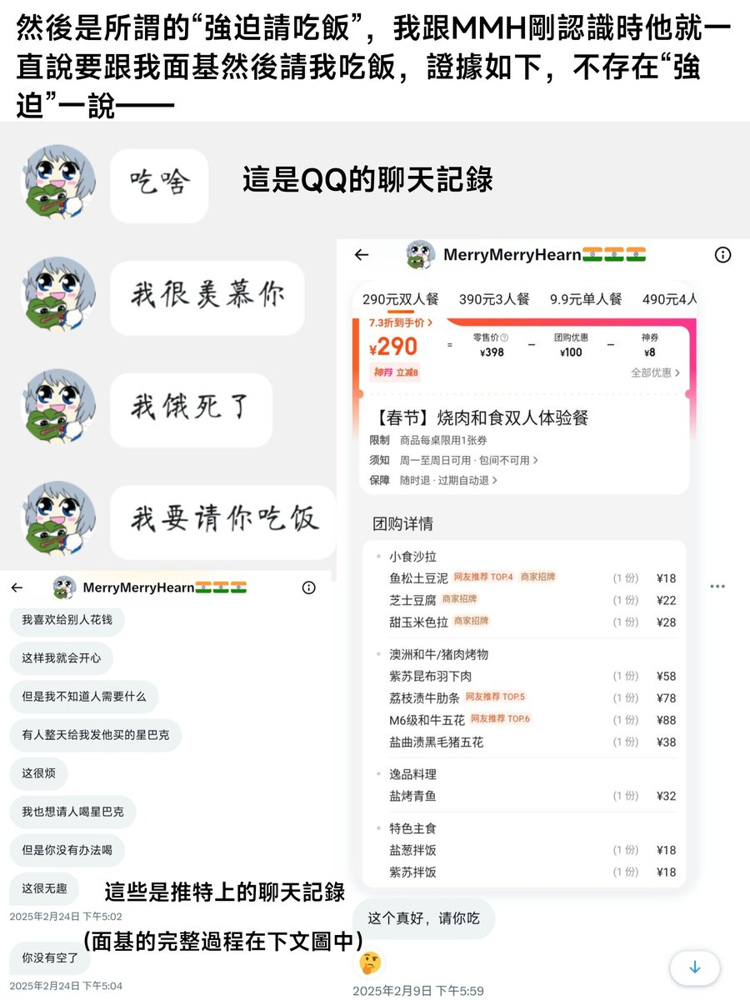

𝓶𝓸𝓻𝓽𝓲𝓼ですわ
@0Yowlry
@xijinping_bot @RenChanT_T @bolckAshley 对😋

羽泽东🇮🇷🚩——古拉格文学家暴力炸金史达林
@xijinping_bot
@RenChanT_T @bolckAshley 是哪个强健犯吗？
𝐀𝐬𝐡𝐥𝐞𝐲 𝐁𝐥𝐨𝐜𝐤🍥🌹🇹🇼🏳️⚧️🇪🇺
@bolckAshley
我是Ashley Block，我現在就中推這些天圍繞我與MMH的輿論事件澄清一些事。
首先關於我“道歉”。我道歉是因為我認為我第二天打亂了他的固定行程導致他生氣，所以我希望這麼做會讓他消氣，並不代表我承認所謂的“強姦犯”的指控是符合事實的。（這個地方我前幾天跟@Sovietpunk2077的表述有誤）（1/2） https://t.co/3udQF1caey